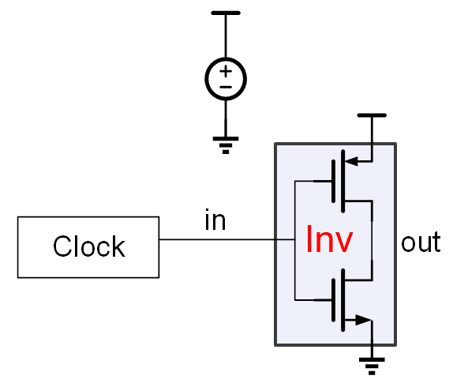
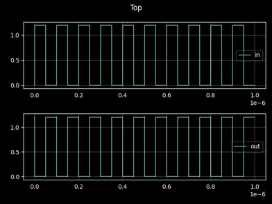

TED 前端基础
TED 前端基础
TED 是一个基于 Python 的硬件描述语言框架，支持模块化、参数化的电路建模，并能导出仿真网表、进行行为级或晶体管级仿真。本文档介绍 TED 的核心概念和语法规范，并通过多个数字电路示例说明如何使用 TED 构建基本逻辑单元。
在实际代码中，如要用到TED，规范的写法是仅导入使用到的变量和类
from pyted import module, NMOS, PMOS对于简单的情况，可以采用简化的导入方式
from pyted import *一、基本概念
1. 模块（Module）与实例（Instance）
在TED 中，模块（Module） 类似于面向对象编程中的类，表示某个电路结构的定义。而 实例（Instance） 是模块被具体调用时生成的对象。
在TED的代码中，使用@module修饰器来修饰一个符合一定规范的函数，将该函数转义为一个模块的定义。
函数的参数定义应该符合下面的规范：
- 不带默认值的入参，被认为是模块的端口
- 带默认值的入参，无论是否带类型声明，均被认为是模块的参数
- 模块的端口可以声明类型，类型包括：Input， Output, Ctrl，分别代表输入端口，输出端口和控制端口
- 不做类型声明的端口，默认为输入端口
示例：反相器模块
@module
def Inv(x: Input, z: Output):
Vdd() >> PMOS() % x >> z >> NMOS() % x >> Vss()模块调用并创建实例：
"x" >> Inv() >> "z"等价写法（推荐显式声明节点）：
x, z = Node(2)
x >> Inv() >> z二、模块定义详解
1. 模块端口类型
TED 支持四种类型的端口：
| 端口类型 | 含义 |
|---|---|
Input | 输入端口 (用于>>连接算子， 器件位于>>右侧) |
Output | 输出端口 (用于>>连接算子， 器件位于>>左侧) |
Ctrl | 控制端口（用于 % 连接） |
Supply | 电源端口，如 VDD/VSS，隐式定义，默认自动连接 |
这里Supply端口隐式定义的意思是，模块不需要也不能直接定义Supply端口，这些端口由系统自动强制定义。 可以使用Vdd()和Vss()访问当前代码所在模块的VDD和VSS节点。
TED端口类型的定义与器件的连接有关，其中>>用于描述输入和输出的端口连接，而%用于描述控制端连接。
对于电路中常见的MOS管（包括NMOS和PMOS），我们遵循这样的约定：
- 栅极G作为控制端Ctrl
- 漏级D作为输入端Input
- 源级S作为输出端Output
典型的NMOS连接：
D >> NMOS() % G >> S实际中，大部分情况，MOS管的源和漏对称，此时D和S可以进行调换。 也就是将原本该连到源端（输出）的节点连到其漏端（输入），原本连接到漏端（输入）的节点连接到其源端（输出）。 这在前面的反向器中实际就是这么写的
@module
def Inv(x: Input, z: Output):
Vdd() >> PMOS() % x >> z >> NMOS() % x >> Vss()注意这里的PMOS，其左侧应该是输入，而Vdd()连的是PMOS的源端。这里是考虑了反向器中PMOS管的源漏对称性， 同时考虑这个写法更加简洁，因此没有遵循规则，而将其源漏互换了。
然而不要忽略MOS端源漏不对称的情况（例如在ESD电路中的MOS管），此时应该严格按照以上定义进行连接。
对于自定义的模块，一般情况没有输入输出对称的情况，最好严格遵循输入输出进行连接。任何时候连接的正确性应由用户来负责。
示例：
@module
def Nand2(a: Input, b: Input, z: Output):
...电源端口
电源端口（Vdd和Vss）默认省略，系统自动将实例的Vdd/Vss连接到当前模块的Vdd/Vss
例如对于电路中常见的MOSFET晶体管，其体端（body）定义为其电源端口，其中 – P管的body连到Vdd – N管的body连到Vss
注意：这里说的电源端口Vdd/Vss（代码中可以用Vdd()/Vss()来获得）， 指的是当前上下文的电源端口， 这个电源端口不一定是全局的VDD/VSS。
例如，假定在一个设计中，模块A对内有它对应的Vdd()和Vss()， 这两个端口是对应于模块A的。 如果在模块A中有个器件实例B，那么实例B的Vdd/Vss端口默认连到模块A的Vdd()/Vss()。
对于多于一个电源域的模块，可以采用如下的方法处理：
- 将其中最主要的电源域设置为模块的Vdd()/Vss()端口
- 将其他的电源域设置为普通（输入/输出/控制）端口
例如，下面模块定义，将vdd2定义为控制端口：
@module
def DualPowerModule(inp: Input, out: Output, vdd2: Output):
Vdd() >> PMOS() % inp >> out # 使用主电源VDD
vdd2 >> PMOS() % inp >> out # 使用额外电源vdd2根据需要也可以定义为Input或者Output端口，并且将这个端口视为普通端口，但无论如何不能定义为Supply端口。
改变默认的VDD/VSS
如果需要改变VDD/VSS的默认连接，可以执行实例的set_vdd/set_vss函数。
下面的测例中，对于实例dut，更改了它的VDD/VSS为vdda/vssa。在输出的spice代码中，可以看到这个实例的VDD/VSS修改成功了。
def test_customize_vdd_vss():
@module
def Dut(a: Input, z: Output):
(Vdd(), Vss()) >> Resistor(r=1)
@testbench
def Top():
dut = Dut().rename("dut")
"a" >> dut >> "b"
dut.set_vdd("vdda")
dut.set_vss("vssa")
hspice = dut.to_hspice()
debug(hspice)
assert hspice[:18] == "xdut a b vdda vssa"也可以使用set_vdd/set_vss修改MOSFET晶体管的体端连接，因为MOSFET晶体管的体端就是它的VDD/VSS。
这个例子中出现了电阻Resistor，其端口定义如下：
@module
def Resistor(a: Input, b: Input, r=1):
pass注意：Instance中还有两个api分别是get_vdd()和get_vss()，是用于获得这个实例的VDD/VSS节点的。有人或许会想，可以通过这两个API来获得该实例的VDD/VSS，然后连接到别的节点上去。
dut.get_vdd() >> "vdda"这种写法是错误的。因为我们需要做的是将dut的VDD从原先连接的节点断开，再连到新的节点，而上面的写法，只是将dut的VDD连接到新的节点，并没有与原先连接的节点断开。这么做会将原先连接的节点和新的节点连在一起，导致错误。因此千万不要这么做。
2. 模块参数化能力
TED 允许模块定义时引入参数，用于控制器件尺寸、模型名称、拓扑结构等。
示例：
@module
def Inv(x: Input, z: Output, m=1):
Vdd() >> PMOS(m=m) % x >> z >> NMOS(m=m) % x >> Vss()调用时可传参：
Inv(m=2)三、连接语法与语义
TED 使用两个主要的连接运算符：
>>：将前一个对象的输出连接到后一个对象的输入%：将前一个对象的输出连接到目标模块的控制端口（Ctrl）
连接规则如下：
| 表达式 | 描述 |
|---|---|
A >> B | 将 A 的输出连接到 B 的输入 |
A % B | 将 A 的输出连接到 B 的控制端口（Ctrl） |
示例：
"a" >> (inv := Inv()) >> "z"获取实例的方法（海象运算符）：
"a" >> (inv := Inv()) >> "z"此时可以用 inv 变量访问该实例的各种方法（如网表导出、布局设置等）。
对于有多个输入或者输出端口的情况，遵循下面的原则：
- 连接算子两边的端口的尺寸必须匹配
- 连接时按顺序进行连接
如果是 A >> (n1, n2) 这种形式，即一个多输出模块连接到多个显式节点的情况，仍然遵循以上原则。 例如模块 A 有两个 Output 端口（按定义顺序为 o1, o2），那么表达式 A >> (n1, n2) 会将 o1 连接到 n1，并将 o2 连接到 n2。
对于多端口连接，如 (a, b) >> Nand2(m=m) 或 A >> (n1, n2)，“连接时按顺序进行连接”。 对于 @module 定义的函数，这个顺序是指其参数列表中的端口声明顺序。 例如，Nand2(a: Input, b: Input, z: Output)，输入端口顺序是 a 然后 b，输出端口顺序是 z。 那么 (node1, node2) >> Nand2() 会将 node1 连接到 a，node2 连接到 b 吗。 同样，如果 SomeModule 定义为
def SomeModule(i1: Input, i2: Input, o1: Output, o2: Output):
pass那么 SomeModule() >> (net1, net2) 会将 o1 连接到 net1，o2 连接到 net2。
四、节点（Node）
节点是 TED 中最基本的电学连接单位，类似于原理图中的网络。
定义方式：
- 显式创建单个节点：
n = Node()- 同时创建多个节点：
n1, n2 = Node(2)- 隐式使用字符串命名节点：
"x" >> Inv() >> "z"⚠️ 推荐在复杂设计中显式定义节点，便于调试、重命名和编辑器辅助。
当使用字符串隐式定义节点时，该节点的作用域仅限于当前所在的模块。 例如，如果在一个模块 ModuleA 中使用了 "x"，然后在另一个模块 ModuleB 中也使用了 "x"， 当 ModuleA 和 ModuleB 的实例被放在同一个顶层模块 Top 中时，这两个 "x" 指的不是同一个节点，而是两个模块各自的内部节点。
节点命名
定义节点的时候，可以显式的对节点进行命名
a = Node(name='a')注意，不能写成
a = Node('a') # 容易与Node(2)混淆，Node的第一个非关键字参数是size，而不是name需要注意的是，大部分情况下，用户一般不需要对节点进行这样显式的命名，只需定义
a = Node()就可以，原因如下：
- 在代码中使用变量
a本身已经具有语义信息，不需在Node(name="a")中再重复声明节点名 - 在导出网表的时候，TED会解析代码中的变量名，并自动将该节点命名为'a'
当然在需要的情况下，对节点进行显式命名也是可以的。
节点与tuple的连接规则
对于代码
("a", "b") >> Nand2() >> "z"此时连接到Nand2()的是一个Python的tuple，这时("a", "b")会被转化为一个size为2的节点然后再进行连接。
对于控制节点尺寸大于1的情况，连接规则也遵循上述原则，例如有个模块（实际是个差分对模块）：
@module
def DifferentialPair(D1: Input, D2, Input, G1: Ctrl, G2: Ctrl, S: Output):
pass其连接方式如下
(d1, d2) >> DifferentialPair() % (g1, g2) >> s隐式节点
在 NAND2 示例中，NMOS 的连接是 z >> NMOS(m=m) % a >> NMOS(m=m) % b >> Vss()。在 NOR2 示例中，PMOS 的连接是 Vdd() >> PMOS(m=m) % a >> PMOS(m=m) % b >> z。 这种链式连接 A >> B >> C 意味着 A 的输出连接到 B 的输入，同时 B 的输出自动连接到 C 的输入。 此时，B 和 C 之间的连接点是一个自动创建的、匿名的内部节点。
五、逻辑门模块示例（紧凑型代码风格）
以下是一组使用 紧凑风格 实现的基础逻辑门模块，直接在模块函数体内定义器件并完成连接，适用于简单电路场景。
反相器（Inverter）
@module
def Inv(x: Input, z: Output, m=1):
Vdd() >> PMOS(m=m) % x >> z >> NMOS(m=m) % x >> Vss()二输入与非门（NAND2）
@module
def Nand2(a: Input, b: Input, z: Output, m=1):
Vdd() >> PMOS(m=m) % a >> z
Vdd() >> PMOS(m=m) % b >> z
z >> NMOS(m=m) % a >> NMOS(m=m) % b >> Vss()二输入或非门（NOR2）
@module
def Nor2(a: Input, b: Input, z: Output, m=1):
Vdd() >> PMOS(m=m) % a >> PMOS(m=m) % b >> z
z >> NMOS(m=m) % a >> Vss()
z >> NMOS(m=m) % b >> Vss()与门（AND2）
@module
def And2(a: Input, b: Input, z: Output, m=1):
(a, b) >> Nand2(m=m) >> Inv(m=m) >> z或门（OR2）
@module
def Or2(a: Input, b: Input, z: Output, m=1):
(a, b) >> Nor2(m=m) >> Inv(m=m) >> z异或门（XOR2）
@module
def Xor2(a: Input, b: Input, z: Output, m=1):
not_a = Node()
not_b = Node()
term1 = Node()
term2 = Node()
a >> Inv(m=m) >> not_a
b >> Inv(m=m) >> not_b
(a, b) >> And2(m=m) >> term1
(not_a, b) >> And2(m=m) >> term2
(term1, term2) >> Or2(m=m) >> z六、代码优化技巧总结
为了提高代码简洁性和可读性，在编写像逻辑门这样的小规模电路时，可以采用以下优化方法：
✅ 1. 直接连写器件定义与连接
对于简单电路，无需先定义变量再连接，可以直接写成一行：
Vdd() >> PMOS() % a >> z而不是：
pmos1 = PMOS()
Vdd() >> pmos1 % a >> z✅ 2. 使用链式连接表达串联关系
例如表达两个 NMOS 串联：
z >> NMOS() % a >> NMOS() % b >> Vss()比分开写更清晰：
z >> NMOS() % a
NMOS() % a >> NMOS() % b >> Vss()✅ 3. 对并联结构保持多行表达
对于并联结构（如 NOR 中的 NMOS），保留多行写法更直观：
z >> NMOS() % a >> Vss()
z >> NMOS() % b >> Vss()✅ 4. 复杂逻辑建议保留中间节点
在构建 XOR、MUX 等组合逻辑时，保留中间节点提升可读性。
七、进阶功能与建议
1. 参数化 NAND/NOR 模块生成器
你可以封装一个通用函数生成任意位宽的 NAND/NOR：
def make_nand(n=2):
@module
def NandN(*inputs, z: Output, m=1):
for i in range(n):
Vdd() >> PMOS(m=m) % inputs[i] >> z
z >> NMOS(m=m) % inputs[0]
for i in range(1, n):
NMOS(m=m) % inputs[i] >> Vss()
return NandN使用示例：
a, b, c, z = Node(4)
(a, b, c) >> make_nand(3)(m=2) >> z八、命名规范建议（风格指南）
| 元素 | 推荐命名方式 |
|---|---|
| 模块名 | CamelCase（如 Nand2, FlipFlop） |
| 节点名 | snake_case 或简洁小写字母（如 "clk", "reset_n"） |
| 实例变量名 | snake_case（如 inv1, mux_inst） |
导出网表
TED的模块和实例可以用于导出用于仿真或者其他目的的网表。网表可有多种不同格式。调用APIget_sim_netlist()可得到当前仿真的网表文件路径
实例导出网表
实例导出网表数据的语法如下：
- 导出hspice网表：
inst.to_hspice() - 导出spectre网表：
inst.to_spectre() - 导出verilog网表：
inst.to_verilog()
其中inst代表一个实例。下面是一个具体的例子：
"x" >> (inv1:=Inv()) >> "z"
inv1.to_hspice()模块导出子电路
模块导出网表子电路的语法如下：
- 导出hspice子电路：
somemodule.to_hspice_subckt() - 导出spectre子电路：
somemodule.inst.to_spectre_subckt() - 导出verilog网模块：
somemodule.inst.to_verilog_module()
其中somemodule代表一个模块，例如：
@module
def SomeModule():
debug(current_module().to_hspice_subckt())导出完整网表
在电路设计的顶层需要导出完整的可供仿真的网表。在完整网表中会包含
- 模型库的调用
- 所有涉及的底层模块的子电路定义
- 顶层电路描述
- 仿真指令和参数设置 针对不同的仿真器，可以导出不同格式的网表：
- 导出hspice网表：
somemodule.to_hspice_netlist() - 导出spectre网表：
somemodule.inst.to_spectre_netlist()
实际中的电路仿真器除了hspice和spectre还有其他的仿真器，例如hsim、Alps等。这些仿真器一般都兼容hspice或spectre网表，因此不需要针对这些仿真器输出特定的网表。
TED电路仿真
- 调用仿真指令：
tran/ac/dc/dcsweep/noise/pss/... - 声明需要查看的波形：watch
- 绘制波形图：raw.show()
from pyted import *
from modules.builtins import *
from modules.stimuli import Clock
from modules import PMOS, NMOS
@module
def Inv(inp: Input, out: Output, m=1):
Vdd() >> PMOS(m=m) % inp >> out >> NMOS(m=m) % inp >> Vss()
def test1():
@testbench
def Top():
V(Vdd(), Vss(), dc=1.2).rename("vdd")
Clock(period=1e-7) >> "in" >> Inv() >> "out"
debug(current_module().to_spectre_netlist())
raw = tran(1e-6)
debug(raw.get_signal_names())
debug(raw.get_signal("out"))
watch("in")
watch("out")
watch("vvdd:p")
raw.show()上面这段程序描述了下面的电路原理图:

这个代码执行后，得到下面的仿真波形:
